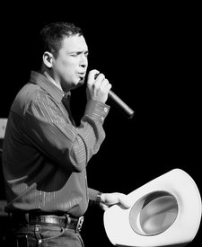
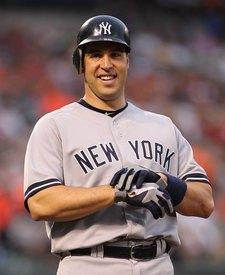

← Every state
Texas
The average Liberty Score of the delegation is 71 out of 100, a C-. 39 of its seats in Congress are decided on November 3, 2026.
Who should Texas send to Congress, and who should it send home?Say what you think. Other readers can answer you.DiscussOn the ballot November 3
1 Senate seat and 38 House seats in Texas. Tap a race to see the candidates side by side.
- SenateToss-upOpen seat
 Ken PaxtonR · no votes in Congress since 2021. Graded on words and actionsC
Ken PaxtonR · no votes in Congress since 2021. Graded on words and actionsC James TalaricoD · no votes in Congress since 2021. Graded on words and actionsFand 1 more on the ballot
James TalaricoD · no votes in Congress since 2021. Graded on words and actionsFand 1 more on the ballot - 1st District
 Nathaniel MoranR · holds the seatAYolanda PrinceD · no votes in Congress, and not researched yet–
Nathaniel MoranR · holds the seatAYolanda PrinceD · no votes in Congress, and not researched yet– - 2nd DistrictOpen seatShaun FinnieD · no votes in Congress, and not researched yet–Steve TothR · no votes in Congress, and not researched yet–
- 3rd District
 Keith SelfR · holds the seatB-Evan HuntD · no votes in Congress, and not researched yet–
Keith SelfR · holds the seatB-Evan HuntD · no votes in Congress, and not researched yet– - 4th District
 Pat FallonR · holds the seatA-Jason PearceD · no votes in Congress, and not researched yet–
Pat FallonR · holds the seatA-Jason PearceD · no votes in Congress, and not researched yet– - 5th District
 Lance GoodenR · holds the seatA-Chelsey HockettD · no votes in Congress, and not researched yet–
Lance GoodenR · holds the seatA-Chelsey HockettD · no votes in Congress, and not researched yet– - 6th District
 Jake EllzeyR · holds the seatADanny MintonD · no votes in Congress, and not researched yet–
Jake EllzeyR · holds the seatADanny MintonD · no votes in Congress, and not researched yet– - 7th District
 Lizzie FletcherD · holds the seatFAlexander HaleR · no votes in Congress, and not researched yet–and 1 more on the ballot
Lizzie FletcherD · holds the seatFAlexander HaleR · no votes in Congress, and not researched yet–and 1 more on the ballot - 8th DistrictOpen seatLaura JonesD · no votes in Congress, and not researched yet–Jessica Hart SteinmannR · no votes in Congress, and not researched yet–
- 9th DistrictOpen seatLeticia GutierrezD · no votes in Congress, and not researched yet–Alex MealerR · no votes in Congress, and not researched yet–
- 10th DistrictOpen seatChris GoberR · no votes in Congress, and not researched yet–Caitlin RourkD · no votes in Congress, and not researched yet–
- 11th District
 August PflugerR · holds the seatAClaire ReynoldsD · no votes in Congress, and not researched yet–
August PflugerR · holds the seatAClaire ReynoldsD · no votes in Congress, and not researched yet– - 12th District
 Craig GoldmanR · holds the seatB+Angela Rodriguez PrillimanD · no votes in Congress, and not researched yet–
Craig GoldmanR · holds the seatB+Angela Rodriguez PrillimanD · no votes in Congress, and not researched yet– - 13th District
 Ronny JacksonR · holds the seatA-Mark NairD · no votes in Congress, and not researched yet–
Ronny JacksonR · holds the seatA-Mark NairD · no votes in Congress, and not researched yet– - 14th District
 Randy WeberR · holds the seatB+Thurman BartieD · no votes in Congress, and not researched yet–
Randy WeberR · holds the seatB+Thurman BartieD · no votes in Congress, and not researched yet– - 15th District
 Monica De La CruzR · holds the seatA-
Monica De La CruzR · holds the seatA-
Bobby PulidoD · no votes in Congress, and not researched yet– - 16th District
 Veronica EscobarD · holds the seatFAdam BaumanR · no votes in Congress, and not researched yet–
Veronica EscobarD · holds the seatFAdam BaumanR · no votes in Congress, and not researched yet– - 17th District
 Pete SessionsR · holds the seatA-Casey ShepardD · no votes in Congress, and not researched yet–
Pete SessionsR · holds the seatA-Casey ShepardD · no votes in Congress, and not researched yet– - 18th District
 Christian MenefeeD · holds the seatFRonald WhitfieldR · no votes in Congress, and not researched yet–
Christian MenefeeD · holds the seatFRonald WhitfieldR · no votes in Congress, and not researched yet– - 19th DistrictOpen seatKyle RableD · no votes in Congress, and not researched yet–Tom SellR · no votes in Congress, and not researched yet–
- 20th District
 Joaquin CastroD · holds the seatFEdgardo Rafael BaezR · no votes in Congress, and not researched yet–
Joaquin CastroD · holds the seatFEdgardo Rafael BaezR · no votes in Congress, and not researched yet– - 21st DistrictOpen seatKristin HookD · no votes in Congress, and not researched yet–

Mark TeixeiraR · no votes in Congress, and not researched yet– - 22nd DistrictOpen seatTrever NehlsR · no votes in Congress, and not researched yet–Marquette Greene-ScottD · no votes in Congress, and not researched yet–
- 23rd DistrictOpen seatBrandon HerreraR · no votes in Congress, and not researched yet–Katy Padilla StoutD · no votes in Congress, and not researched yet–and 1 more on the ballot
- 24th District
 Beth Van DuyneR · holds the seatA-Kevin BurgeD · no votes in Congress, and not researched yet–
Beth Van DuyneR · holds the seatA-Kevin BurgeD · no votes in Congress, and not researched yet– - 25th District
 Roger WilliamsR · holds the seatB+Dione SimsD · no votes in Congress, and not researched yet–
Roger WilliamsR · holds the seatB+Dione SimsD · no votes in Congress, and not researched yet– - 26th District
 Brandon GillR · holds the seatA-Steven ShookD · no votes in Congress, and not researched yet–and 1 more on the ballot
Brandon GillR · holds the seatA-Steven ShookD · no votes in Congress, and not researched yet–and 1 more on the ballot - 27th District
 Michael CloudR · holds the seatBTanya LloydD · no votes in Congress, and not researched yet–
Michael CloudR · holds the seatBTanya LloydD · no votes in Congress, and not researched yet– - 28th District
 Henry CuellarD · holds the seatFTano TijerinaR · no votes in Congress, and not researched yet–and 1 more on the ballot
Henry CuellarD · holds the seatFTano TijerinaR · no votes in Congress, and not researched yet–and 1 more on the ballot - 29th District
 Sylvia GarciaD · holds the seatFMartha FierroR · no votes in Congress, and not researched yet–
Sylvia GarciaD · holds the seatFMartha FierroR · no votes in Congress, and not researched yet– - 30th DistrictOpen seatFrederick Haynes IIID · no votes in Congress, and not researched yet–Everett JacksonR · no votes in Congress, and not researched yet–
- 31st District
 John CarterR · holds the seatAJustin EarlyD · no votes in Congress, and not researched yet–and 1 more on the ballot
John CarterR · holds the seatAJustin EarlyD · no votes in Congress, and not researched yet–and 1 more on the ballot - 32nd DistrictOpen seatDan BarriosD · no votes in Congress, and not researched yet–Jace YarbroughR · no votes in Congress, and not researched yet–
- 33rd DistrictOpen seatColin AllredD · former representativeFPatrick GillespieR · no votes in Congress, and not researched yet–
- 34th District
 Vicente GonzalezD · holds the seatFEric FloresR · no votes in Congress, and not researched yet–and 2 more on the ballot
Vicente GonzalezD · holds the seatFEric FloresR · no votes in Congress, and not researched yet–and 2 more on the ballot - 35th DistrictOpen seatCarlos De La CruzR · no votes in Congress, and not researched yet–Johnny GarciaD · no votes in Congress, and not researched yet–
- 36th District
 Brian BabinR · holds the seatB+Rhonda HartD · no votes in Congress, and not researched yet–
Brian BabinR · holds the seatB+Rhonda HartD · no votes in Congress, and not researched yet– - 37th District
 Greg CasarD · holds the seatFLauren PeñaR · no votes in Congress, and not researched yet–
Greg CasarD · holds the seatFLauren PeñaR · no votes in Congress, and not researched yet– - 38th DistrictOpen seatJon BonckR · no votes in Congress, and not researched yet–Melissa McDonoughD · no votes in Congress, and not researched yet–and 1 more on the ballot
Senators today


Representatives today
 Michael T. McCaulR · Texas · 10th DistrictLeaving CongressA
Michael T. McCaulR · Texas · 10th DistrictLeaving CongressA- Nathaniel MoranR · Texas · 1st DistrictA
- August PflugerR · Texas · 11th DistrictA
- John R. CarterR · Texas · 31st DistrictA
- Jake EllzeyR · Texas · 6th DistrictA
- Pete SessionsR · Texas · 17th DistrictA-
- Beth Van DuyneR · Texas · 24th DistrictA-
- Pat FallonR · Texas · 4th DistrictA-
 Morgan LuttrellR · Texas · 8th DistrictLeaving CongressA-
Morgan LuttrellR · Texas · 8th DistrictLeaving CongressA-- Monica De La CruzR · Texas · 15th DistrictA-
- Ronny JacksonR · Texas · 13th DistrictA-
- Brandon GillR · Texas · 26th DistrictA-
- Lance GoodenR · Texas · 5th DistrictA-
 Jodey C. ArringtonR · Texas · 19th DistrictLeaving CongressA-
Jodey C. ArringtonR · Texas · 19th DistrictLeaving CongressA- Dan CrenshawR · Texas · 2nd DistrictLost the primaryB+
Dan CrenshawR · Texas · 2nd DistrictLost the primaryB+- Randy K. Weber, Sr.R · Texas · 14th DistrictB+
- Brian BabinR · Texas · 36th DistrictB+
- Craig A. GoldmanR · Texas · 12th DistrictB+
- Roger WilliamsR · Texas · 25th DistrictB+
- Michael CloudR · Texas · 27th DistrictB
 Wesley HuntR · Texas · 38th DistrictLeaving CongressB
Wesley HuntR · Texas · 38th DistrictLeaving CongressB Troy E. NehlsR · Texas · 22nd DistrictLeaving CongressB-
Troy E. NehlsR · Texas · 22nd DistrictLeaving CongressB- Chip RoyR · Texas · 21st DistrictLeaving CongressB-
Chip RoyR · Texas · 21st DistrictLeaving CongressB-- Keith SelfR · Texas · 3rd DistrictB-
- Henry CuellarD · Texas · 28th DistrictF
- Vicente GonzalezD · Texas · 34th DistrictF
 Marc A. VeaseyD · Texas · 33rd DistrictLeaving CongressF
Marc A. VeaseyD · Texas · 33rd DistrictLeaving CongressF- Lizzie FletcherD · Texas · 7th DistrictF
- Sylvia R. GarciaD · Texas · 29th DistrictF
 Jasmine CrockettD · Texas · 30th DistrictLeaving CongressF
Jasmine CrockettD · Texas · 30th DistrictLeaving CongressF- Joaquin CastroD · Texas · 20th DistrictF
 Julie JohnsonD · Texas · 32nd DistrictLost the primaryF
Julie JohnsonD · Texas · 32nd DistrictLost the primaryF- Veronica EscobarD · Texas · 16th DistrictF
 Lloyd DoggettD · Texas · 37th DistrictLeaving CongressF
Lloyd DoggettD · Texas · 37th DistrictLeaving CongressF Al GreenD · Texas · 9th DistrictLost the primaryF
Al GreenD · Texas · 9th DistrictLost the primaryF- Greg CasarD · Texas · 35th DistrictF
- Christian D. MenefeeD · Texas · 18th DistrictF
Who should Texas send to Congress, and who should it send home?
Say it where other readers can answer you. Opinions, videos and corrections about Texas are all in one place.
← The state
All discussions, from every page →
Discussion
Texas
Opinions, videos, corrections and bug reports about Texas, all in one place. Readers' words, not ours.
Leave out anything private about anyone. The rules, what your account keeps, and what readers have changed so far
Think a grade is wrong? Argue it with us.
The community meets on a group call every day, with the hosts and the panel. Bring the vote you think we got wrong.